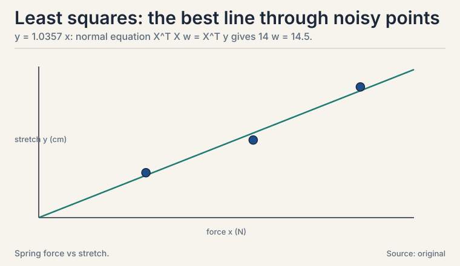
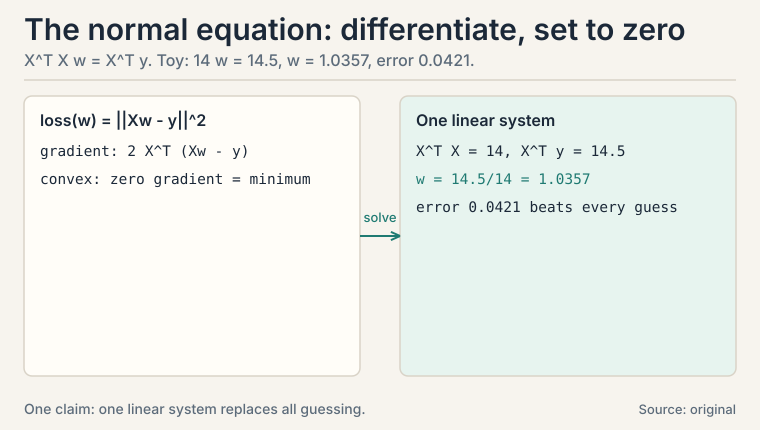
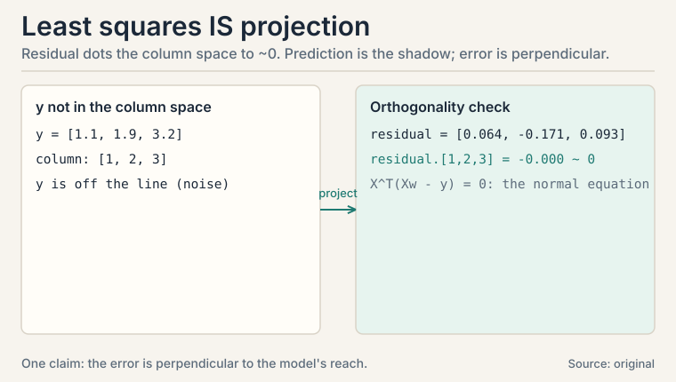
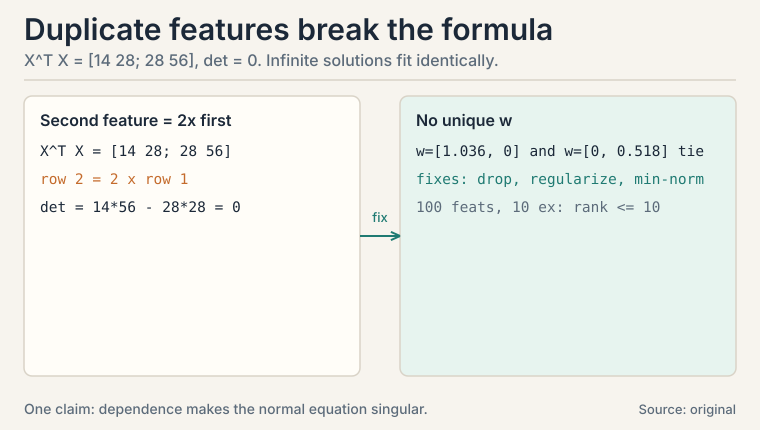
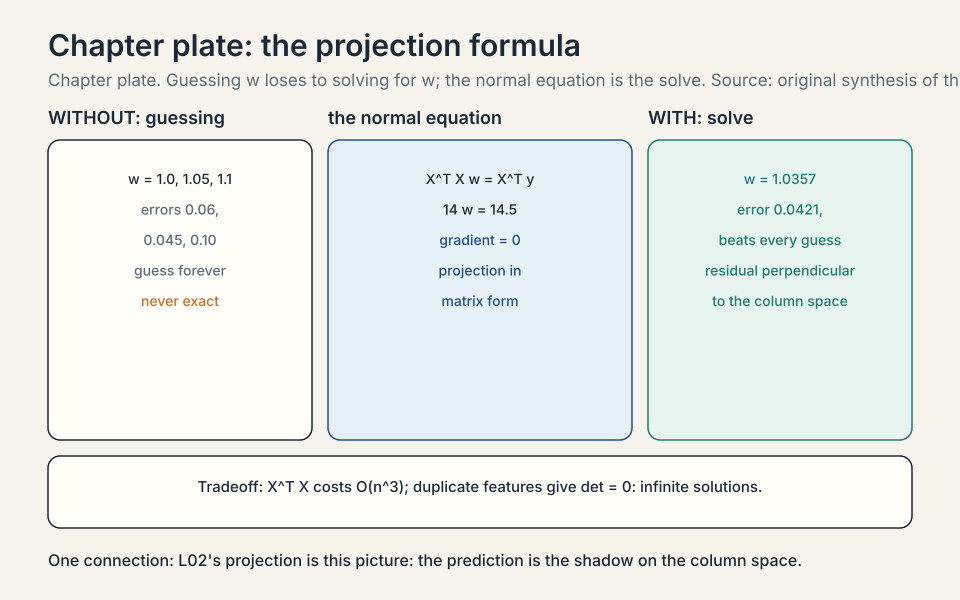

Lecture 9: Least Squares and Linear Regression
Video blocked (ad-blocker or local file mode).
Watch on YouTubeVideo not loading? Watch on YouTube
The NPTEL lecture this chapter follows: least squares, the normal equation, and the minimum-norm solution.
The task: draw the best line through noisy points
Three measurements of a spring: force x (newtons), stretch y (cm).
(1, 1.1), (2, 1.9), (3, 3.2)
Hooke’s law says stretch is proportional to force: y = w x. Find the w that best explains the data. “Best” needs a definition first: minimize the sum of squared errors.
loss(w) = (w*1 - 1.1)^2 + (w*2 - 1.9)^2 + (w*3 - 3.2)^2
Subchapter: why squares
Three reasons: they punish large errors more, they are smooth (differentiable, unlike absolute value), and under Gaussian noise they are the maximum likelihood estimator (L06). Least squares is the oldest learning algorithm in statistics, and it is still the first model every ML course fits (CS229 L02).
The third reason is the deep one. If each measurement has Gaussian noise, the likelihood of the data given w is a product of Gaussians, and maximizing it is exactly minimizing the sum of squared errors. The loss function is a noise model in disguise: squares mean “I believe the noise is Gaussian.” L06’s warning applies: outliers break this belief, and the fit chases them.

First attempt: guess and check
Try w = 1.0: errors -0.1, -0.1, -0.2. Squared sum = 0.01 + 0.01 + 0.04 = 0.06. Try w = 1.05: predictions 1.05, 2.1, 3.15. Errors -0.05, -0.2, -0.05. Squared sum = 0.0025 + 0.04 + 0.0025 = 0.045. Better. Try w = 1.1: predictions 1.1, 2.2, 3.3. Errors 0, -0.3, -0.1. Squared sum = 0 + 0.09 + 0.01 = 0.10. Worse. The best w sits near 1.05. Guessing works on one parameter. With 50 features it is hopeless.
The key question
Is there a formula for the best w, no guessing, no iteration?
Subchapter: the loss in matrix form
For the general problem, write it in matrix form. X is the n x d feature matrix, y the n targets:
loss(w) = ||Xw - y||^2
Xw is the prediction vector: each row of X dots w (L02). The loss is the squared norm of the error vector (L01). Two lessons collide in one formula: matrices make the predictions, the norm scores them.
Subchapter: differentiate and set to zero
The loss is convex in w (a sum of squares, L08’s bowl). So the minimum is where the derivative is zero:
gradient: 2 X^T (Xw - y) = 0 normal equation: X^T X w = X^T y
One linear system solves all of regression. If X^T X is invertible: w = (X^T X)^-1 X^T y. No iteration, no learning rate, exact answer.
Subchapter: the spring toy, solved
X = [1, 2, 3]^T, y = [1.1, 1.9, 3.2]^T:
X^T X = 1 + 4 + 9 = 14 X^T y = 1*1.1 + 2*1.9 + 3*3.2 = 1.1 + 3.8 + 9.6 = 14.5 w = 14.5 / 14 = 1.0357
Best slope: 1.036 cm per newton. Squared error at this w: predictions 1.036, 2.071, 3.107. Errors 0.064, -0.171, -0.093. sum of squares = 0.0041 + 0.0294 + 0.0086 = 0.0421. Lower than every guess. The formula beat the guessing.

Subchapter: the intercept, the column of ones
Real lines rarely pass through the origin. Add an intercept: y = w0 + w1 x. The trick: a column of ones in X. Design matrix for the spring data:
X = [ 1 1 ] y = [ 1.1 ]
[ 1 2 ] [ 1.9 ]
[ 1 3 ] [ 3.2 ]
X^T X = [ 3 6 ] X^T y = [ 6.2 ]
[ 6 14 ] [ 14.5 ]
Solve the 2x2 system. Determinant: 3*14 - 36 = 6. Inverse: [[14, -6],[-6, 3]]/6. w = inverse * X^T y:
w0 = (14*6.2 - 6*14.5)/6 = (86.8 - 87)/6 = -0.0333 w1 = (-6*6.2 + 3*14.5)/6 = (-37.2 + 43.5)/6 = 1.05
Best line: y = -0.033 + 1.05 x. Predictions: 1.0167, 2.0667, 3.1167. Residuals: 0.0833, -0.1667, 0.0833. Sum of squares: 0.0069 + 0.0278 + 0.0069 = 0.0417. Slightly better than the no-intercept 0.0421: the intercept bought one more degree of freedom. The pattern generalizes: every feature you want, including the constant 1, is a column of X. CS229 L02’s design matrix works exactly this way.
Subchapter: two features, solved by hand
Two real features this time. X = [[1,2],[2,1],[3,3]], y = [3,3,6]:
X^T X = [ 14 13 ] X^T y = [ 27 ]
[ 13 14 ] [ 27 ]
Determinant: 1414 - 1313 = 196 - 169 = 27. Inverse: [[14,-13],[-13,14]]/27. w1 = (1427 - 1327)/27 = 27/27 = 1. w2 = 1 by symmetry. Check: predictions [1+2, 2+1, 3+3] = [3, 3, 6]. Exact fit: the three points lie exactly on the plane y = x1 + x2. Two lessons in one toy: the 2x2 inverse by hand (determinant, adjugate, divide), and the determinant as the invertibility detector. Had the columns been dependent, the determinant would be 0 and the inverse would not exist: the next section’s failure mode, previewed.
The geometry: it was projection all along
L02 promised this. The vector y = [1.1, 1.9, 3.2] lives in R^3. The model’s predictions Xw live in the column space of X: here, the line spanned by [1, 2, 3]. y is not on that line (the points are noisy). Least squares projects y onto the line. The projection is the prediction. The leftover is perpendicular to the line.
Subchapter: verify the perpendicularity
Prediction p = 1.0357 * [1, 2, 3] = [1.036, 2.071, 3.107]. Leftover r = y - p = [0.064, -0.171, 0.093]. Dot with the line direction [1, 2, 3]:
r . [1,2,3] = 0.064*1 + (-0.171)*2 + 0.093*3
= 0.064 - 0.342 + 0.279 = 0.001 ~ 0
Zero (up to rounding). The error is perpendicular to everything the model can express. That is the normal equation’s geometric meaning: X^T (Xw - y) = 0 says the residual is orthogonal to every column of X.

Subchapter: R-squared, the fraction explained
Error 0.0421 is meaningless alone: is it good? Compare against the dumbest model: always predict the mean. R-squared measures the fraction of variance the model explains:
R^2 = 1 - SSres / SStot
Spring toy: y-bar = 2.0667. SStot = (1.1-2.0667)^2 + (1.9-2.0667)^2 + (3.2-2.0667)^2 = 0.9344 + 0.0278 + 1.2844 = 2.2467. SSres = 0.0421. R^2 = 1 - 0.0421/2.2467 = 0.9812. The line explains 98.1% of the variance. Scale: 1.0 is perfect, 0.0 means “no better than the mean,” negative means worse than the mean (possible on test data). The warning: R^2 never decreases when you add features, even useless ones. Ten random features inflate R^2 on training data and destroy it on test data. Report adjusted R^2 (penalizes feature count) or, better, test-set R^2. A training R^2 of 0.99 with a test R^2 of 0.30 is not a good model: it is a memorization report.
Where it breaks: more features than sense
Two failure modes, both with numbers.
Subchapter: dependent features
Add a second feature that is twice the first: X = [[1, 2], [2, 4], [3, 6]]. Then X^T X = [[14, 28], [28, 56]]: row 2 is twice row 1. Determinant: 1456 - 2828 = 784 - 784 = 0. Not invertible. The normal equation has infinitely many solutions: w = [1.036, 0] and w = [0, 0.518] fit identically. L01’s linear dependence returns as a singular matrix.
Subchapter: more features than examples
100 features, 10 examples. X^T X is 100x100 but built from 10 outer products: rank at most 10 (L04). Ninety directions are unconstrained. Infinite solutions fit the training data perfectly and generalize terribly. This is overfitting in its purest form. The playlist’s “minimum normed solution” (Lecture 21) picks the shortest w among the infinite candidates [uncertain: exact lecture treatment unknown].
Subchapter: the fixes
Three fixes, in order of preference. Drop the duplicate: the cheapest, when you can identify it. Regularize (ridge): solve (X^T X + lambda I) w = X^T y instead. The lambda I term makes the matrix invertible no matter what: it adds lambda to every eigenvalue (L03), so none can be zero. The price: the solution is biased toward small weights. Take the minimum-norm solution: among all perfect fits, pick the shortest w. This is what the Moore-Penrose pseudoinverse (the matrix that gives the minimum-norm least-squares solution) computes, and it is gradient descent’s implicit choice too.

Subchapter: polynomial regression and the overfit curve
Least squares fits any features, including x^2, x^3, .... Six points from y = x^2 with small noise, at x = -2, -1, -0.5, 0.5, 1, 2. Fit polynomials of degree 1, 2, and 5. Train MSE and test MSE (fresh points at -1.5, 0, 1.5). MSEs below are illustrative, from one noise draw, rounded to two decimals:
degree 1: train 2.66, test 1.20 (underfits: a line cannot bend) degree 2: train 0.02, test 0.00 (right model: both small) degree 5: train 0.00, test 0.37 (overfits: memorizes, then flails)
Degree 5 threads all six training points exactly: train error zero. On fresh points it is far worse than degree 2 (test 0.37 vs 0.00). The test error traces a U: underfit on the left, overfit on the right, the sweet spot at the true degree. This is CS229 L06’s bias-variance tradeoff in numbers before that lesson names it. The decision rule: model complexity is a knob, and the test set turns it. Training error only tells you the knob exists.
Subchapter: weighted least squares, the fan fix
L09’s Q&A diagnosed the fan: residuals growing with x mean the noise variance grows with x, and ordinary least squares over-weights the noisy points. Weighted least squares down-weights them: minimize sum of w_i * error_i^2. The normal equation generalizes to X^T W X w = X^T W y with W diagonal of weights. Spring toy, last point (the noisiest) weighted 0.25, others 1.0:
OLS: w = 1.0357 WLS: w = 1.0069
The down-weighted point pulls less: the slope drops toward what the two clean points say. Weights are inverse variances when you know them (a point with 4x the variance gets 1/4 the weight), or business judgments when you do not (recent data weighted over stale data). The decision rule: plot residuals vs x first. Fan shape means weight. Curve shape means the model is wrong: add features instead.
Subchapter: Gauss-Markov, the license for least squares
Why least squares, of all possible estimators? The Gauss-Markov theorem answers: under three assumptions on the errors (mean zero, uncorrelated, equal variance), the ordinary least squares estimator is the BLUE: the best linear unbiased estimator. “Best” means smallest variance among all linear unbiased estimators. No other linear method squeezes more precision from the same data. The assumptions are the license: mean-zero errors (no systematic bias), uncorrelated (no repeating patterns the model misses), equal-variance (no fan). Violate equal variance and the license lapses: weighted least squares regains BLUE with the right weights. Violate linearity of the truth and no linear estimator is saved: fix the model, not the method. Interviewers ask “why least squares” expecting exactly this: BLUE under Gauss-Markov, MLE under Gaussian noise (L06), projection geometrically. Three answers, one estimator.
Subchapter: never invert, decompose
The formula w = (X^T X)^-1 X^T y is for understanding, not for code. Forming X^T X squares the condition number: on the intercept toy, cond(X^T X) = 46.1, the square of cond(X). Squaring the condition number squares the numerical error. Three better routes, in order of preference. Cholesky: X^T X is symmetric positive definite, so factor it as L L^T and solve two triangular systems: half the work of a general solve, the default for well-conditioned problems. QR: factor X = QR and solve R w = Q^T y without ever forming X^T X: no squaring, the safe default. SVD (L04): the most stable, handles rank deficiency gracefully, slowest. The decision rule: QR by default, Cholesky when you are sure the problem is well-conditioned and need speed, SVD when the matrix might be singular. numpy’s lstsq uses SVD-flavored solvers under the hood: it already follows this rule.
| Idea | Formula | Meaning |
|---|---|---|
| Least squares | min ||Xw - y||^2 | best linear fit under squared error |
| Normal equation | X^T X w = X^T y | one linear system; exact solution |
| Intercept | column of ones in X | toy: y = -0.033 + 1.05 x, error 0.0417 |
| Two features by hand | det = 27, inverse, w = [1, 1] | the 2x2 inverse as invertibility detector |
| Geometry | project y onto column space of X | prediction is the shadow; error perpendicular |
| R-squared | 1 - SSres/SStot | fraction of variance explained; toy: 0.9812 |
| Dependent features | det(X^T X) = 0 | infinite solutions; drop or regularize |
| Ridge | (X^T X + lambda I) w = X^T y | lambda per eigenvalue: always invertible |
| Min-norm solution | shortest w among fits | the tie-breaker when data underdetermines w |
| Polynomial overfit | deg 5: train 0.00, test 0.37 | the U-curve; test set turns the complexity knob |
| Weighted LS | X^T W X w = X^T W y | down-weight noisy points; toy: 1.0357 -> 1.0069 |
| Gauss-Markov | BLUE under 3 assumptions | the license: best linear unbiased estimator |
| Never invert | QR default, Cholesky fast, SVD safe | X^T X squares the condition number: 46.1 here |
What is used where: the real systems
| Math idea | Where it appears | Why there |
|---|---|---|
| Normal equation | Small-d regression | exact solution, O(d^3) |
| Gradient descent | Large-d regression | iterate instead of inverting (L08) |
| Ridge | CS229 L06 | lambda I fixes singularity |
| Gaussian MLE | Probabilistic view | squares = Gaussian noise (L06) |
| Projection | Residual analysis | error orthogonal to the model’s reach |
| R-squared | Model reporting | fraction of variance explained |
| Weighted LS | Heteroscedastic data | inverse-variance weights fix the fan |
| Polynomial features | Feature engineering | bend the line without leaving least squares |
| QR/Cholesky/SVD | Every real solver | never invert X^T X directly |
| Gauss-Markov | The theoretical license | BLUE: best linear unbiased estimator |

Start from loss(w) = ||Xw - y||^2. Differentiate with respect to w: the gradient is 2 X^T (Xw - y). The loss is convex, so the minimum is where the gradient is zero: X^T X w = X^T y. In the spring toy, X^T X = 14 and X^T y = 14.5, giving w = 1.0357 directly. No iteration needed. When X^T X is singular: dependent columns (a duplicate feature makes the determinant zero, as in the [[14,28],[28,56]] toy) or more features than examples (rank at most n < d). Then infinite weight vectors fit equally well. The standard fixes are dropping redundant features, regularization, or the minimum-norm solution.
Everything: least squares IS projection. The target y rarely lies in the feature matrix’s column space, so you project it there. The projection is the prediction. In the toy, the residual [0.064, -0.171, 0.093] dots with the column [1, 2, 3] to give ~0: the error is perpendicular to the model’s reach. The normal equation X^T(Xw - y) = 0 is exactly this orthogonality statement. Three reasons: squares punish large errors more, squares are smooth (absolute value has a kink at zero, breaking gradient methods), and under Gaussian noise least squares is the MLE (L06). Absolute error handles outliers better but is harder to optimize: the classic accuracy-outlier trade.
X^T X is 100x100 with rank at most 10: 90 directions unconstrained. Infinite weight vectors fit the 10 training points perfectly, most of them wild. Training error zero, test error catastrophic: overfitting in pure form. The minimum-norm solution picks the shortest such w, and regularization (CS229 L06) penalizes large weights to choose among the candidates sensibly. Compare n and d. If d > n, expect singularity. Numerically, check the smallest eigenvalue of X^T X (L03): near zero means trouble. In practice, regularize by default when features outnumber examples.
It solves (X^T X + lambda I) w = X^T y instead. Adding lambda I adds lambda to every eigenvalue of X^T X (L03’s shift rule), so no eigenvalue can be zero: the matrix is always invertible. The price is bias: the solution shrinks toward zero, trading a little bias for a lot of stability. Lambda is the knob. Lambda to 0 recovers ordinary least squares (and its singularity). Lambda to infinity drives w to zero: the model predicts the mean of y. Somewhere between is the bias-variance sweet spot, found by cross-validation.
The normal equation inverts a d x d matrix: O(d^3). For d = 50, instant and exact. For d = 1,000,000, impossible: iterate with gradient descent instead. The decision rule is pure economics: closed form below a few thousand features, iteration above. Ridge keeps the closed form alive a bit longer by guaranteeing invertibility. Yes: conjugate gradient and other iterative linear solvers. They solve X^T X w = X^T y without forming the inverse, in O(d^2) per iteration, and converge in at most d iterations (fewer in practice). The SVD (L04) is the exact middle: stable for singular cases, slower than Cholesky.
Prediction p = [1.036, 2.071, 3.107], residual r = y - p = [0.064, -0.171, 0.093]. Dot r with the column [1, 2, 3]: 0.064 - 0.342 + 0.279 = 0.001, zero up to rounding. It matters because it is the normal equation in disguise: X^T(Xw - y) = 0 is exactly “residual perpendicular to every column.” If your residual is not perpendicular, your “solution” is not the least-squares one: the check catches implementation bugs. That you stopped short of the projection: sliding the prediction along the column space would still reduce the error. The perpendicular foot is the unique closest point. Anywhere else leaves reducible error on the table.
Heteroscedasticity: the noise variance grows with x, violating the constant-variance assumption behind ordinary least squares. The fit over-weights the noisy large-x points. Diagnose with a residual-vs-x plot: a fan shape confirms it. Fix: weighted least squares (weight each point by 1/variance), or transform y (log) to stabilize the variance. The normal equation generalizes: X^T W X w = X^T W y with a weight matrix W. Then the model is wrong, not the noise: y = w x cannot bend, and the data bends. Add features (x^2: polynomial regression) or admit nonlinearity. Fan means noise problem. Curve means model problem. The residual plot distinguishes them.
One, geometry: it projects y onto the column space of X. The residual is perpendicular to the model’s reach, the unique closest point. Two, probability: under Gaussian noise it is the maximum likelihood estimator (L06). Three, optimality: under the Gauss-Markov assumptions (zero-mean, uncorrelated, equal-variance errors) it is BLUE, the best linear unbiased estimator. Same estimator, three licenses. When an assumption fails, the fix follows the failure: heavy tails change the loss, heteroscedasticity changes the weights, nonlinearity changes the features. No: it memorized. Train MSE 0.00, test MSE 0.37, against degree 2’s test MSE of 0.00. Zero training error with wild test error is overfitting’s signature. The test set, not the training set, judges the complexity knob. This is CS229 L06’s bias-variance tradeoff wearing least-squares clothes.
Recap: the whole lesson on one screen
- The task. Fit y = w x to three spring measurements. Loss: sum of squared errors. Squares = Gaussian noise MLE.
- First attempt. Guess w: 1.0 gives 0.06, 1.05 gives 0.045, 1.1 gives 0.10. Works for one parameter.
- The key question. A formula, no guessing?
- The new idea. Differentiate, set to zero: X^T X w = X^T y. Toy: w = 14.5/14 = 1.0357, error 0.0421, beating every guess.
- The intercept. A column of ones: y = -0.033 + 1.05 x, error 0.0417. Two features by hand: det = 27, w = [1, 1], exact fit.
- The geometry. Projection: residual dots the column space to ~0. Prediction is the shadow. Error is perpendicular.
- R-squared. 1 - SSres/SStot = 0.9812 on the toy. Never decreases with more features: report test-set R^2.
- Where it breaks. Dependent features: det = 0, infinite solutions. More features than examples: rank <= n < d, overfitting in pure form.
- The fixes. Drop duplicates, ridge (lambda I: always invertible), or the minimum-norm solution.
- The overfit curve. Six points, degree 5: train 0.00, test 0.37. Degree 2: test 0.00. The U-curve. The test set turns the complexity knob.
- Weighted LS. Fan-shaped residuals mean weight: X^T W X w = X^T W y. Toy: 1.0357 -> 1.0069 when the noisy point counts quarter.
- The license. Gauss-Markov: BLUE under zero-mean, uncorrelated, equal-variance errors. Three answers to “why least squares”: projection, Gaussian MLE, BLUE.
- The numerics. Never invert: X^T X squares the condition number (46.1 here). QR by default, Cholesky for speed, SVD for safety.
- The price and the bridge. Closed form costs O(d^3). With millions of features, iterate (L08) instead. L10 names the loss logistic regression minimizes when squares are the wrong noise model.
Go deeper
- StatQuest, “Linear Regression, Clearly Explained” (the embed above): https://www.youtube.com/watch?v=7ArmBVF2dCs
- The NPTEL lecture for this lesson (frontmatter video): https://www.youtube.com/watch?v=0Dg_yvVgmQo
- Strang, “Introduction to Linear Algebra”, ch. 4.3-4.4: least squares as projection.
- Deisenroth, Faisal, Ong, “Mathematics for Machine Learning”, ch. 9 (free): https://mml-book.github.io: linear regression, MLE view.
Official sources and further reading
Official: - “Essential Mathematics for Machine Learning” playlist, Lecture 21 (this lesson’s video): paper - NPTEL course page (111107137): https://nptel.ac.in/courses/111107137
Further reading: - Strang, “Introduction to Linear Algebra”, ch. 4.3-4.4: least squares as projection. - Deisenroth, Faisal, Ong, “Mathematics for Machine Learning”, ch. 9 (free): - linear regression, MLE view.
Caveats. The spring toy and all numbers are the lesson’s own. The lecture’s exact examples (L21-L23) are [uncertain] (transcripts not recovered).
Connections to the other courses
- CS229 L02/L06: linear regression, the normal equation, regularization, and the probabilistic (Gaussian MLE) interpretation.
- CS229 L06: bias-variance. This lesson’s polynomial numbers (degree 5: train 0.00, test 0.37) are the tradeoff before it gets its name.
- CS229 L10: PCA uses the same projection machinery on the covariance matrix.
- CS336: linear layers solve least-squares-like problems at every step. The projection view explains residual streams.
Coverage map: every lecture concept and where it lives
Lecture 21 promises least squares and the minimum-norm solution. Each concept maps below. Toys are the lesson’s own. The lecture’s exact examples are [uncertain] (transcripts not recovered).
| Lecture concept | Covered in | File line |
|---|---|---|
| Least squares task: spring toy (1,1.1),(2,1.9),(3,3.2) | The task: draw the best line through noisy points | L28 |
| Why squares: punish large errors, smooth, Gaussian MLE | why squares | L44 |
| Guess-and-check: 0.06, 0.045, 0.10 for w = 1.0, 1.05, 1.1 | First attempt: guess and check | L61 |
| Matrix form: loss = ||Xw - y||^2 | the loss in matrix form | L75 |
| Normal equation: X^T X w = X^T y; gradient 2 X^T(Xw - y) | differentiate and set to zero | L89 |
| Spring solved: 14 w = 14.5, w = 1.0357, error 0.0421 | the spring toy, solved | L103 |
| Intercept via column of ones: y = -0.033 + 1.05 x, error 0.0417 | the intercept, the column of ones | L120 |
| Two features by hand: det 27, w = [1,1], exact fit | two features, solved by hand | L151 |
| Projection: residual perpendicular; dot = 0.001 | verify the perpendicularity | L179 |
| R-squared: 0.9812; SStot 2.2467; never decreases with features | R-squared, the fraction explained | L197 |
| Dependent features: det = 0, infinite solutions | dependent features | L223 |
| More features than examples: rank <= 10, overfitting pure form | more features than examples | L232 |
| Fixes: drop, ridge (lambda I), minimum-norm solution | the fixes | L242 |
| Polynomial overfit: deg 5 train 0.00 test 0.37; U-curve | polynomial regression and the overfit curve | L257 |
| Weighted LS: X^T W X w = X^T W y; toy 1.0357 -> 1.0069 | weighted least squares, the fan fix | L280 |
| Gauss-Markov: BLUE; three answers to “why least squares” | Gauss-Markov, the license for least squares | L303 |
| Never invert: cond squared (46.1); QR/Cholesky/SVD rule | never invert, decompose | L322 |
| Bias-variance link: polynomial numbers (CS229 L06) | polynomial regression; Connections | L257, L464 |
Sources
- VIDEOEssential Mathematics for Machine Learning: Lecture 21 (Least Square Approximation)
- SUPPLEMENTStrang, Introduction to Linear Algebra, ch. 4.3-4.4
- SUPPLEMENTDeisenroth, Faisal, Ong, Mathematics for Machine Learning, ch. 9